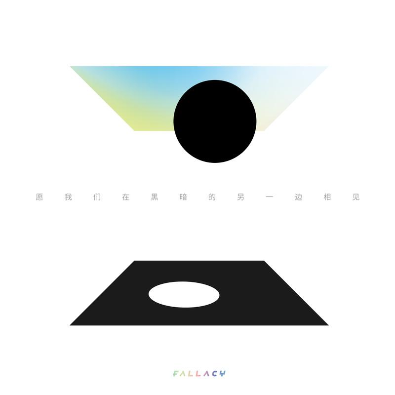
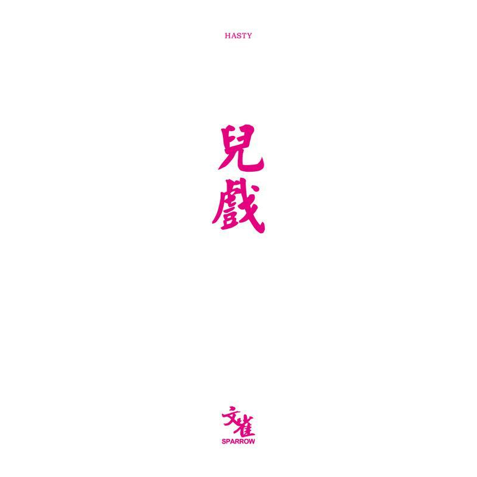
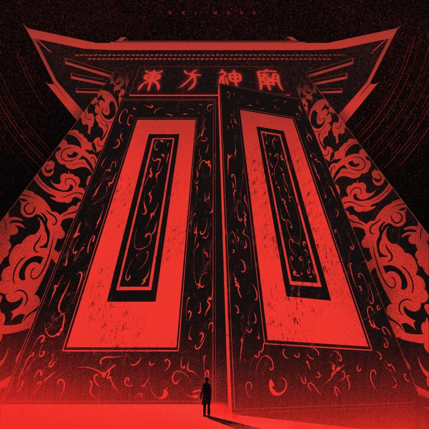
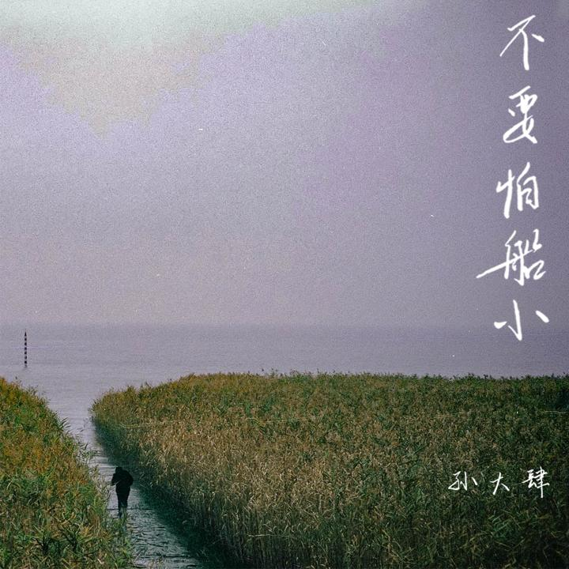
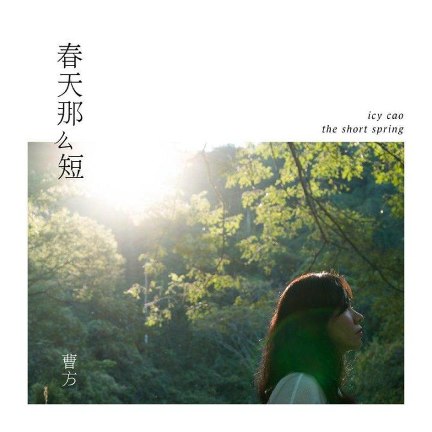
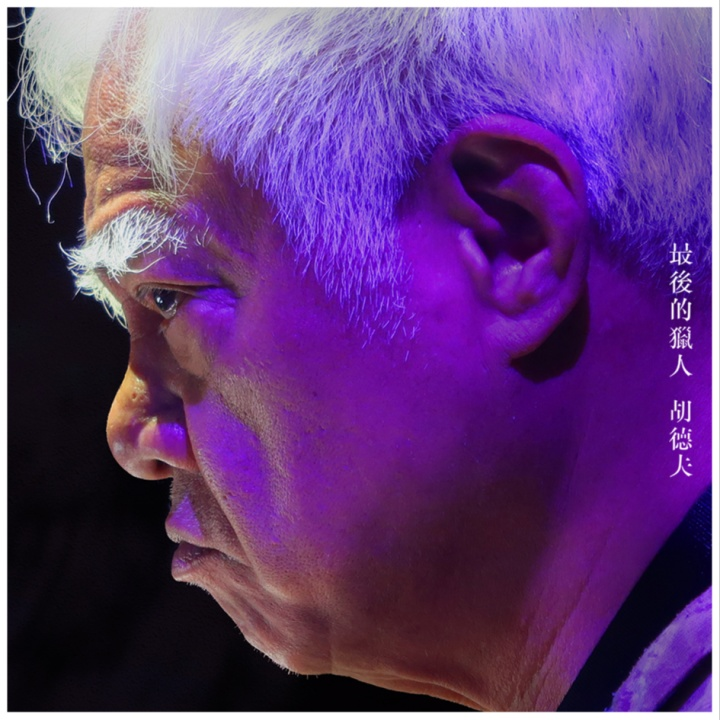
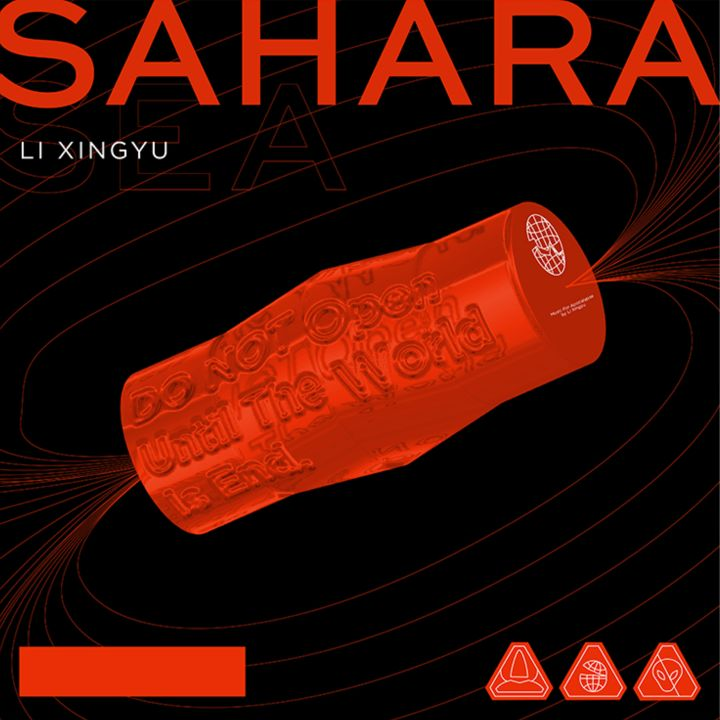
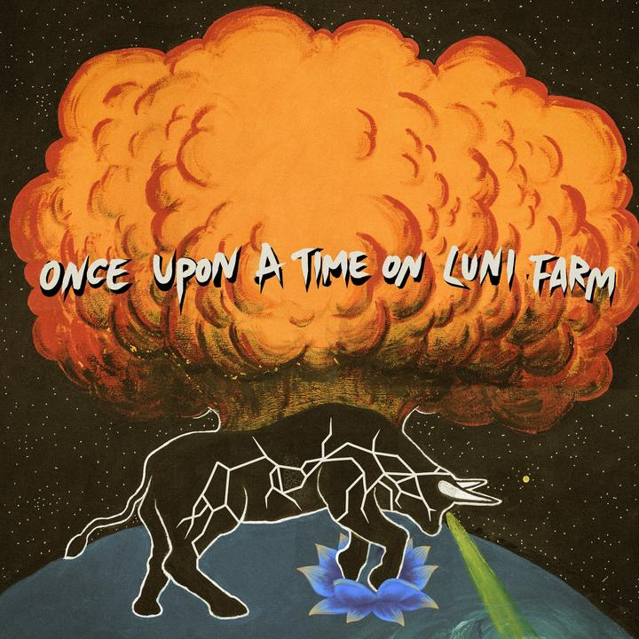

2021流行音乐推荐
作者：声音图书馆 - 知乎
原文名《2021上半年华语十佳专辑》
以下唱片均为声音图书馆精心聆听评选，但乐评来源于网络或专辑简介。*排名不分先后
01 疯医乐队《愿我们在黑暗的另一边相见》

专辑风格：摇滚
发行时间：2021-3-15
“ 《愿我们在黑暗的另一边相见》以一首作为Intro的《潮力》拉开序幕。在这支贯穿着细碎吉他刮擦的曲目中，可以听到间或的铃铛、脚步以及揉搓易拉罐的吱嘎声。这些来自现实物件的声音采样或许暗示着本张唱片某种自觉性美学追求——置身时髦电子声响大行其道的当下，疯医选择与数字合成的声音保持克制与审慎的距离：在摇滚乐经典的三大件以外，大量原声乐器、打击乐乃至人声合唱、念白的加入赋予了这张唱片可贵的质朴感与本源性。
这其中，李增辉奉献的萨克斯演奏是独具灵光的构成部分：在《定国湖》中，它以沉静优雅的旋律线和王旭博标志性的诡谲分解和弦交织共舞，之后却在《回声之丘》里化为利刃与火焰，给三大件铺陈的稳固基底带来了撕裂般的力量。在《这不是雨能解决的问题》与《世界》中，纯净滞缓的钢琴与木吉他演奏更是被令人意外地推到了主导性地位——这与人们传统印象中的疯医乐队大异其趣，却赋予了整张唱片更具起伏错落的听感张力。”
02 文雀乐队《儿戏》

专辑风格：摇滚
发行时间：2021-03-19
“在相继释出两首单曲后，文雀乐队终于推出了全新专辑《儿戏》，将这一年多来的思考与沉淀浇筑成型。与《迷路记》中因爱生迷的偏执情绪和《廟雨連珠》里精巧虚幻的美妙景致不同，此番新作引入更为宏观与深邃的命题。站在岁月的河流之中向前回溯，文雀以沉稳细腻的笔触诠释了对于生活与时间的理解。
此次归来的文雀，似乎多了几分冷静与理智，但专辑最后一曲《希望像星光一样闪烁》却更多展露出乐队深沉与复杂的一面。开篇轻柔的吉他与婉转的小号交织缠绕，在遥远的星际发出回响，一如黑夜中燃起的希望；而尾部沉静与炽烈交错出的矛盾之美，则打破了自身以往统一、明净的后摇语法，与首次加入的小号一起，为整张专辑赋予了绕梁不绝的余味，也留给乐迷更多期待。「儿戏」一词，看似戏谑，实则是文雀乐队以其淡然和真诚，与生活达成的一次和解。”
03 声音玩具《劳动之余》
专辑风格：摇滚
发行时间：2021-05-08
“ 劳动之余，何以解乏，很久以前做过一次西南巡演，当时的巡演主题名就叫劳动之余 ，那还是更早些年的一首歌 ，到今天也没能完成它，记忆深刻的是歌词的第一句 《回家的路上我有些疲倦 毕竟辛勤工作了一天 才挣回一点属于自己的时间 ，该怎么花？》现在还能不时会闪回黄昏回家的小路上的饭菜的香味，安全帽，臭水沟，小茶馆，那里离市中心也就几公里，后来的快二十年 ，城市就像一个不断膨胀的迷宫。可笑的是那时的我虽然还是会感到迷茫和孤独，但依然觉得自己有花不完的时间，而且还不上班，所以接下来的矫情和纠结就这样粗糙青涩的留在了硬盘上。
这次的专辑里最后完成的那首歌是临了倒计时才定稿了最后一版歌词，反复的斟酌也许是因为只有自己能懂和喜欢已经不重要了 ，就像做菜，如何能和别人分享才是我最想要的 ，用了二十年方才明白音乐于我的意义，如同烈日下耕作的农夫，土地已然是他唯一的救赎，而我局限于自己的世界，差一点忘记了仰望星空。 ”
04 诺尔曼《再见黑鸟》
专辑风格：流行
发行时间：2021-04-07
“父亲离开这个世界之后，”黑鸟“便持续盘旋在我世界上空，它们虽然不会像电影里一样攻击人类，却一直这么盘旋着。不安、压抑、脆弱就像歌中一样，多么希望装上自己的爱与痛，离开到一个没有人认识自己的地方。
但谁让我是一颗太阳呢。涅槃之后，伴随着过去与未来相互交织的蓝色，我成为了愚人。在塔罗牌中，愚人是大阿尔卡那牌中的第一张牌，编号为0，代表着”天真“、”无限可能性“以及”启程“。犹如我如今的状态，愚蠢而冲动，却不得不背上生活，一步一步向未来前行。
这忧郁的黑鸟啊，是每一个人心中隐藏的情绪旋涡。我曾经是一个非常爱逃跑的孩子，但如今当我们坠落时，我不再逃跑，而是选择驻足片刻。因为它亦是我谱写音乐的材料。但是，我选择与我身上的所有存在共生。我接受它们、面对它们、分解它们。它们还会不断地出现，然后被我不断处理。”
05 魏濛 《东方神庙》

专辑风格：电子
发行时间：2021-05-18
“这是继交响电子《四大家族》之后的魏濛的第二张纯音乐电子专辑，专为中国民乐与电子音乐而作的《东方神庙》。中国古代神话是巨大而宏伟的中华文化宝库，不管是我们耳熟能详的盘古开天、女娲造人、神农尝百草，还是震撼人心的刑天舞干戚、炎黄之战、鲧盗息壤等众多神话故事，都是瑰丽深刻的文化遗产，于中国人而言有别样的意义所在。但在充斥着快速消费主义文化的短平快时代，它们都在慢慢被遗忘……
同样，中国传统民乐也是也是不可忽视的民族文化宝库，古琴、唢呐、琵琶、二胡等众多乐器都有着西洋乐器无可比拟的魅力，从花样繁多的奏法到各式各样的唱腔，只有中国这片广袤的土壤才能孕育出如此纷繁复杂的音乐体系。”
06 孙大肆 《不要怕船小》

专辑风格：民谣
发行时间：2020-02-15
“我遥想那个风雨飘摇的年代、感受到外婆多舛的命运，以及它传递出来的坚韧与勇气——这似乎是每个人的生命的意义，在人生的风浪中不畏惧地划着属于自己的小船，与你一起划的，还有千万叶小船。
外婆唱了这首歌作为专辑的引子，而较之那个时代高亢又坚定的旋律，我将律动改编成了想要传递的温柔而坚定的样子，就此称它<不要怕船小>，这也成了新专辑的名字。---大肆说。”
07 曹方 《春天那么短》

专辑风格：民谣
发行时间：2021-04-30
“时间来到了今天，仿佛一切都变了，世界愈发嘈杂，共识趋于混淆。是的，世界更加复杂了，空气中有一种急促和夸张。每个人都被卷入湍急的洪流，下意识地用复杂和形式包裹自己，苍白的瞳孔闪烁着异样的光泽，还有，永无休止地炸裂。单纯的美好还珍贵吗？简单的感动还有人在意吗？作为创作者，曹方搬离了大都市，返回家乡云南，逐渐回归的生活本身，她曾经的疑惑：“音乐就要那样做吗？”“没有装修华丽的录音室和满坑满谷的器材就不能做音乐了吗？”答案渐渐清晰，这些不重要。
“我们爱上音乐的时候，它是什么样子的？”这很重要。她卖掉几乎所有设备，只留了一把吉他一支麦克风，开始为自己写歌，为平凡的人和情感创作，为真正值得赞颂的美好和简单而歌唱。这张专辑，就是答卷。曹方2021全新创作专辑「春天那么短」想送给你一张简单而又不简单的唱片。 ”
08 胡德夫 《最後的獵人》

专辑风格：民谣
发行时间：2021-05-31
“猎人是山谷间孤独的行者，是歌咏大地的勇士，猎人更是部族传承的英雄。足迹翻山越野，人生披荆斩棘，当森林消失 原野不复见 最后的猎人将何去何从?古诗与千年古谣的交会，以诗入歌的创作心曲，胡德夫在古稀之年颂讚母亲、老友、故乡、大地…….纪念所有曾经真实存在的一切。”
09 鲸鱼马戏团 《撒哈拉海》

专辑风格：世界音乐
发行时间：2021-04-12
“《撒哈拉海》是一张围绕虚构的故事创作的专辑，其中特邀卡萨布兰卡的Kora演奏家及歌手Mbemba Diebate参与。专辑灵感来自《马可波罗游记》和《看不见的城市》，讲述一个未来的科幻故事，使用人工智能语音合成作为文本叙述。
音乐部分既有非洲的原始歌谣，也有采样技术融合的现代音乐，还有如电影配乐般的科幻篇章。
10 苏紫旭&The Paramecia 狂人农场的往事（pt.1）

专辑风格：摇滚
发行时间：2021-03-09
“狂人农场的往事分三部分发行。第一部分集中体现了我们在器乐上对超长曲目的掌控力，对于管弦和双吉他编配更娴熟有力的运用，在迷幻实验音乐领域的进一步探索，从音乐性的角度来看我个人认为是代表了现阶段整个团队的最高水平，也是我最喜欢的一部分。
第二部分中有半的歌恰恰是在隔离期间写好的，另外一半是在珠海的实时创作，这些歌像散落的星群，同一时间掉在距离我不远的地方，并不是很费力，它们找到了各自在唱片中的位置。
第三部分我们尝试了一些小品类的作品，类似于甜点，其中有都市疯客迪斯科，当代古典乐融合JJ Cale式的乡村吉他，法式小调嫁接悬疑短篇小说，具有印度风味又光怪陆离的演奏类曲目。
奇迹之光照耀着我们，音乐从来都是为了交流而存在。在不满一年的时间里我调度了几乎是身边所有音乐家资源，每天跟不同的时区时差作战，下午写完晚上录，见缝插针的干活，上路演出， 日复一日殚精竭力。现在终于到了要端上台面的时候，我却只想像一名普通乐迷样好好听一听， 好好感受一番。 ”